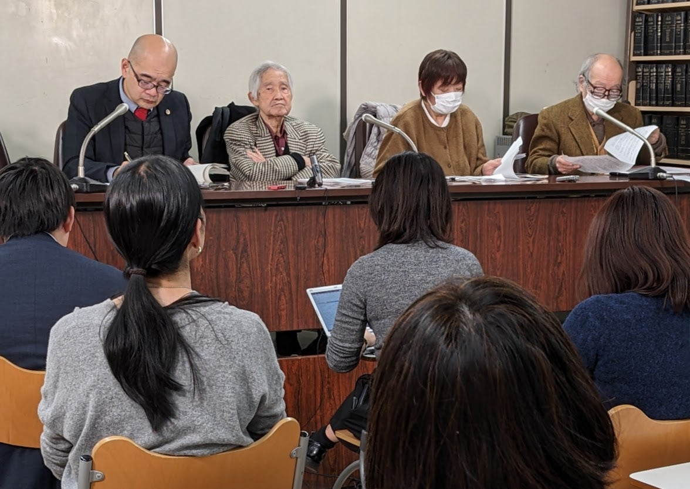
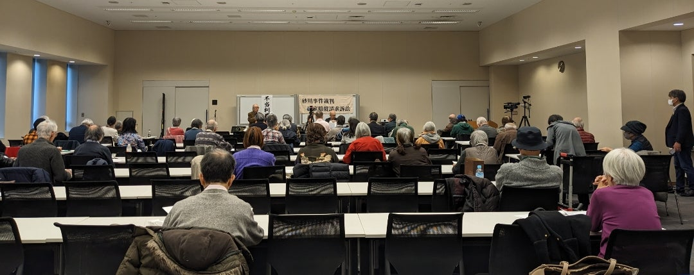

「砂川事件」国賠訴訟 高裁判決 即日レポート
今日2025年1月31日 東京高等裁判所101号法廷で 「砂川事件」国賠訴訟の第２回控訴審が開かれました。
今回も多数の傍聴人が訪れましたが 午後２時の開廷と同時に恒例のテレビ用撮影が２分間行われた後 「秒で」言い渡された判決には 唖然とさせられました。
主文
１ 原判決中、不当利得返還請求に係る部分を取り消す。
２ 上記部分に係る控訴人らの訴えをいずれも却下する。
３ 控訴人らのその余の控訴をいずれも棄却する。

その後 法廷を出た支援者たちは 原告の一人坂田和子さんが裁判所前で掲げた「不当判決」の文字を見つめ続けました。
{kind=link}
午後３時から始まった記者会見には
NHK 琉球新報 朝日新聞 東京新聞などの記者
および フリーのジャーナリストが集まりました。

本ブログでも注目してきたように 今回の裁判は
1957年に米軍立川基地内に数メートル入ったとして逮捕・起訴された土屋源太郎さんらが 1959年の第一審「伊達判決」では米軍基地の存在そのものを違法として「無罪」を言い渡されたにもかかわらず 特別跳躍上告によって最高裁で覆された刑事訴訟に関して 訴えてきたものです。
その時の最高裁長官でもあった田中耕太郎裁判長が 「砂川事件」で侵入された側（つまり被害者にあたる）アメリカの大使らと密会し 裁判情報を伝えていたことが 2008年以降アメリカの国立公文書館で発見された資料から明らかになりました。
それにより 憲法37条１項に定められた「公平な裁判所」の裁判を受ける権利を侵害された と土屋さんらは主張し それが今回の国賠訴訟の争点の一つでした。

判決と同時に渡された数十ページにわたる判決文に素早く目を通した弁護士と原告は 記者会見に臨んで一人一人の思いを語り 「不当判決」に対する厳しい評価を述べました。
{kind=link}
それと同時に 高裁の判断のなかみを読み取ると 主文の素っ気なさとは異なる裁判所の認識がうかがわれることもわかりました。
特に注目すべきは 日米間の関係者が交わした書簡などの資料について 以下のような点が高裁の評価として明記されたことです。
田中裁判長の甲５書簡から推認される言及又は言動は、被害者又は被害者的立場にあるアメリカ合衆国に対し、手続き外で、審理の状況や、公判期日の指定の仕方、判決の時期といった進行の見通しや上告審における審理の対象、評議の在り方についての希望を結果として伝えるものであり、裁判所の公平らしさに疑念を抱かせるおそれがあるから、その意味で不適切なものであったといわざるを得ない。
（「判決要旨」より引用。下線は本稿筆者による）
「不適切」と認めながら 結局は「審判の公平性、客観性に影響するような性質のものであったとまではいえない」とは あまりにも無理のある論旨で それこそ司法の判断として「不適切」にもほどがある というものです。
質問をした記者の発言からも 常識とかけ離れた判断に釈然としない思いが感じとれました。
刑事事件の裁判長が 進行中の裁判の一方の当事者と私的に会うなどということがあって良いはずはなく その事実は認めながらこのような判決に至るとは 土屋さんの言うとおり 司法がいかに公正でないかということを自ら証明したようなものでしょう。
熱心なやりとりが続いた記者会見の後 午後４時過ぎから 衆議院第二議員会館で「報告集会」が始まりました。 
{kind=link}
{kind=link}
活発な質問に加えて
今回の判決文で 田中裁判長の言動に対して「不適切」とまで言わざるを得なかったということは 原告らの奮闘の成果なのではないか といった指摘もなされました。
確かに 敗訴とはいえ意味深い判決内容でした。
もちろん原告団もそのことを認識しつつ 今日の判決を不服として最高裁まで闘う決意を表明し 変わらぬ支援を呼びかけました。
早速報じられた主な関連記事は以下のとおりです。
砂川事件 当時の最高裁長官の行動“不適切”指摘も訴え退ける | NHK | 事件
砂川事件裁判長の「不適切行為」を認めた判決なのに… アメリカ側への情報漏えい訴訟、原告が敗訴に憤り：東京新聞デジタル